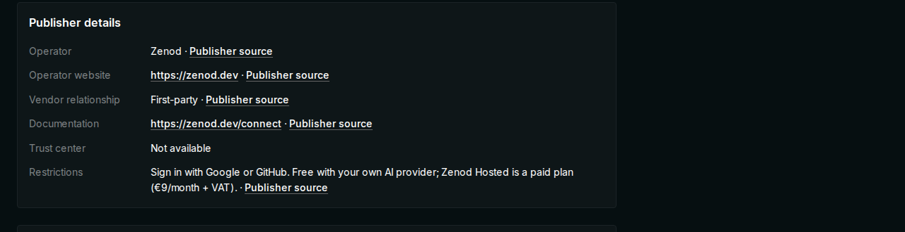
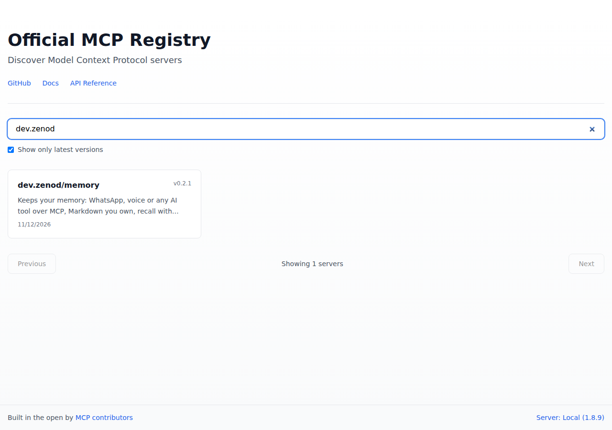

You were right: "dev.zenod" reads like a wrong address. Every place people see now says Zenod and zenod.dev.
Why it was there: the official MCP Registry gives every server an ID written backwards from its website, so zenod.dev becomes dev.zenod. That backwards ID is how the registry checked we own zenod.dev. We then repeated that ID as if it were a name. Glama and others copy it into their own web addresses.
What can't change: the registry's rules require that backwards form for an ID tied to a website, and it never allows zenod.dev/…. Its only other option is a GitHub-based ID, which is not better. So the ID stays, and only the registry and the Glama web addresses still contain it. Everything people read next to it now says Zenod and https://zenod.dev.
Every place found
| Where | Before | Now |
|---|---|---|
| Official MCP Registry entry | website https://zenod.dev/connect | website https://zenod.dev, title "Zenod — the AI librarian of your memory" (version 0.2.1, live) |
| Glama listing | "by dev.zenod" only, no website | new Publisher details box: Operator Zenod, website https://zenod.dev, First-party, docs zenod.dev/connect. Glama still prints "by dev.zenod" under the title and in its web address. Glama makes that line from the registry ID, and no setting changes it. |
| mcp.so submission | title "Zenod (dev.zenod/memory)" | title "Zenod (zenod.dev)", website https://zenod.dev |
| awesome-mcp-servers list request | "Official MCP Registry: dev.zenod/memory" | Website https://zenod.dev added, registry line says "listed as Zenod" |
| zenod.dev home page | source said "listed as dev.zenod/memory" | says "listed in the official MCP Registry as Zenod" (live zenod.dev already shows no dev.zenod) |
| Zenod product deck | "listed … as dev.zenod/memory" | "listed … as Zenod" |
| Social posts not yet out (one Reddit, two X) and the social team's product facts | "listed as dev.zenod/memory" | sent to the social team to reword before anything posts. None of them was ever published. |
| GitHub repo About box, Gemini CLI extension, Instagram, YouTube, LinkedIn, TikTok | already https://zenod.dev | checked, nothing to fix |
| X profile | not readable today because your laptop is offline | the saved bio text has no dev.zenod, and the next check reads the live profile |
| Registry ID itself, the Glama web address, the registry check inside our publish step, an internal label inside a server image | dev.zenod | kept: the registry requires it, and nobody reads the last two |
| Old evidence notes in the repo | dev.zenod | kept as records of what happened, not rewritten |
No real link anywhere pointed at a "dev.zenod" website. Every link already went to zenod.dev. The damage was the backwards ID shown as if it were our name.
What you see now
Glama listing, Publisher details:

Registry entry: the registry's own search page shows only the ID, with no title or website. Its data, which Glama, VS Code and GitHub read, carries the title Zenod and https://zenod.dev.

EPIC-10 row E10-S1, 12 November 2026.